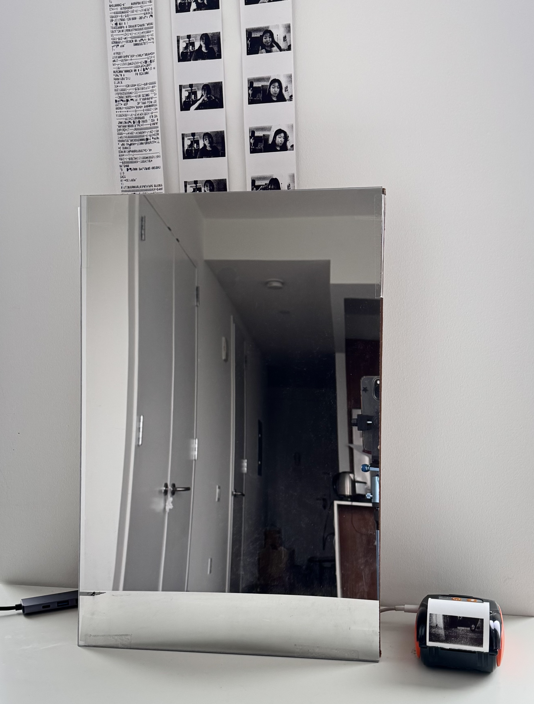
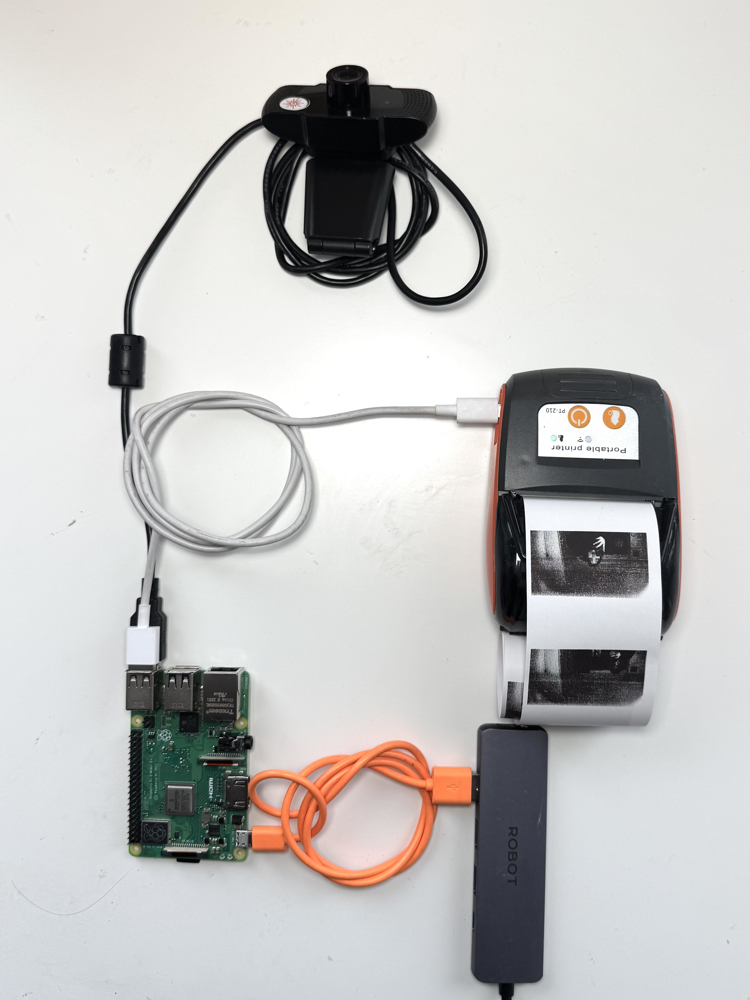
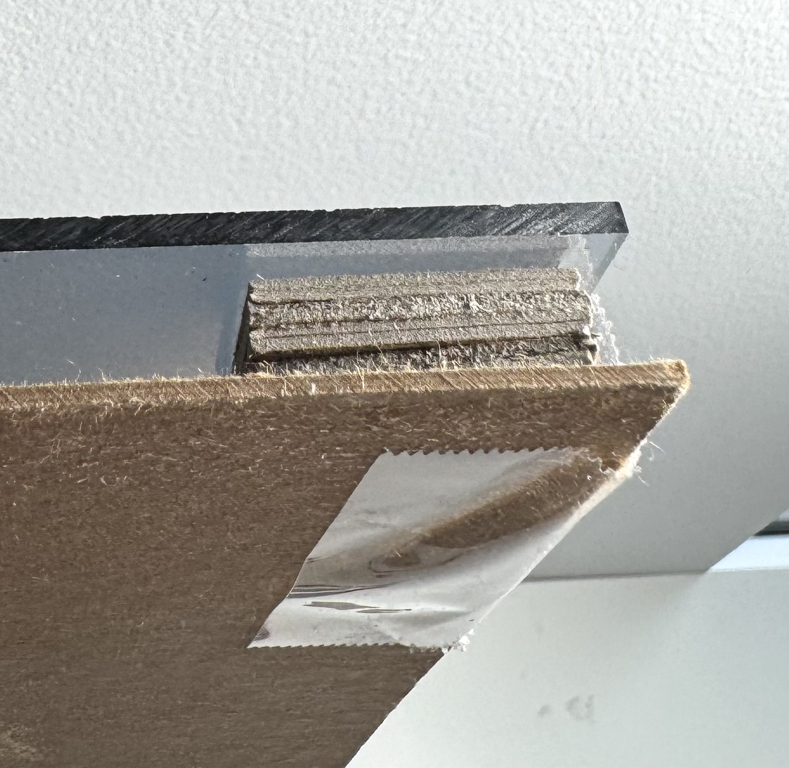
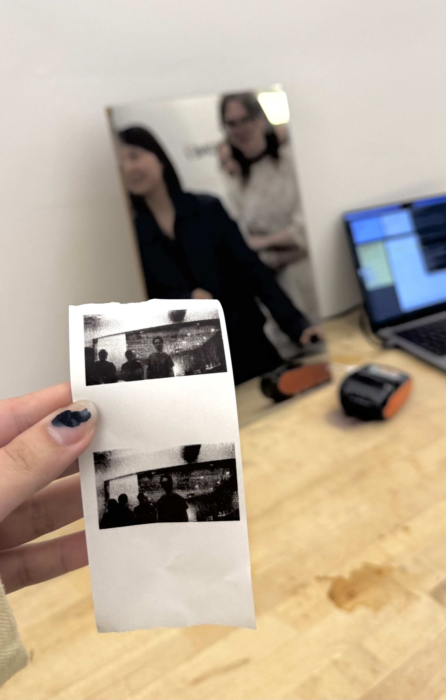
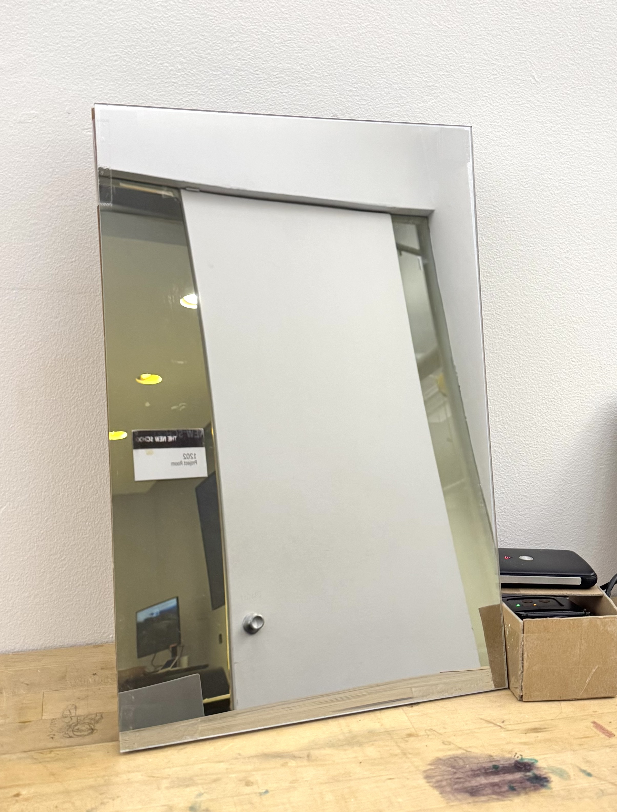
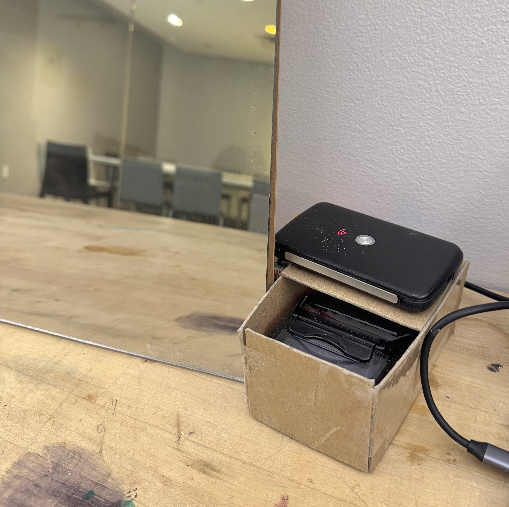

Mirror Selfie
April - May 2025
Responsibilities
Designer · Programmer
Tools
Python · Open CV · Raspberry Pi · Bash · Webcam · Printer · Mirror · Adobe Photoshop
Through this project, I explored the interaction between people and mirrors. When walking by mirrors, I noticed that people tend to subconsciously stare at the mirrors back to themselves to check their own appearance or to take mirror pictures. However, after I learnt about spy two-way mirrors, I felt more cautious interacting with mirrors due to my paranoia of being spied on. For this project titled “Mirror-Selfie”, I am embodying my fear of being stared back at by the mirror or anything behind the mirror. Using a camera with the OpenCV Python library, I detect faces and print out a frame of the moment when anyone looks into the mirror.

Output: printed photo
Mirror
POS Printer
Backend hardware
Webcam
Raspberry Pi
POS Printer
Connector to usbc
Wifi modem on the side

Process
OpenCV face detection on laptop

Face detection in Raspberry Pi using Python OpenCV

Testing hardware: 2 way mirror + camera

Integrating camera behind the mirror using a chipboard as support

Adding gap between mirror and chipboard backing to account for camera lense thickness

POS thermal printer test print

First photo print came out like this...

First succesful photo print

Changed image format to greyscale and smaller size
My Experience Programming the System
As this was my first time working with a Raspberry Pi, I encountered several technical challenges during development. Setting up the device and maintaining a stable internet connection proved particularly difficult, especially when switching between different Wi-Fi networks at home and at school. To ensure consistency, I ultimately relied on a portable Wi-Fi modem. Despite these obstacles, the installation came together successfully, and I am eager to observe how people would interact with it in a real-world setting without prior knowledge of the mirror’s function.
In the next refinement process, I would shorten the face-detection delay to reduce waiting time, extend the cooldown period to prevent excessive printing, and redesign the mirror’s physical form to feel more inviting and visually compelling, rather than rigid and purely functional.
Because the system currently relies on battery-powered components, including the Wi-Fi modem and thermal printer, the longevity of the installation is limited. Moving forward, I would explore ways to power the setup through a stable electrical source and further automate the program so that it can operate independently for extended periods. Overall, I am proud of how Mirror Selfie developed, particularly as an early experiment in both technical implementation and public interaction.
A Little About the System
The face-detection software is designed to continuously overwrite captured images, ensuring participant privacy while optimizing storage on the Raspberry Pi, which has limited capacity. In this sense, Mirror Selfie is arguably less surveillant than platforms such as social media, public photo booths, or public cameras, where images are often stored semi-permanently or distributed online.
Demo + User testing



Future Plans
I plan to develop Mirror Selfie into a public installation that places the work in a real-world context and tests its underlying questions at scale. The project aims to spark conversation around surveillance culture by contrasting it to other forms of voluntary participation in image-making throughout people’s everyday activity.
What distinguishes Mirror Selfie, a camera concealed behind a mirror, from a two-way mirror where people would knowingly pose, even if they are unaware of who might be watching from the other side?
How does this differ from uploading images online, where control over visibility is often surrendered, or stepping into a photo booth in a public space?
The installation also probes public reaction to having an image printed without prior awareness, even if the photograph is immediately given to the participant and deleted from the system. By staging this moment of surprise, the work asks whether such an encounter feels playful, unsettling, or ethically ambiguous, and why. Through this tension, Mirror Selfie examines how consent, visibility, and trust operate in contemporary visual culture, questioning where individuals draw the line between comfort and intrusion in environments saturated with cameras.
Key Learnings
1. Integrating OpenCV with Python on Raspberry Pi
I gained hands-on experience implementing face detection using OpenCV through Raspberry Pi. This helped me gain skills like: optimizing performance, managing timing thresholds, and designing logic that balanced responsiveness with system limitations.
2. Thermal POS Printer Integration
Connecting and controlling a POS thermal printer introduced challenges around serial communication, formatting images for low-resolution output, and regulating print frequency to prevent overload. This process deepened my understanding of hardware–software coordination in physical computing systems.
3. Public Trust and the Psychology of Surveillance
During demonstrations, many participants were eager to have their photo taken despite the system’s main topic of conversation. This raised questions about whether people instinctively trust technological systems, or the developer presenting them, even when surveillance mechanisms are not fully visible.
4. Consent Through Design and Interface Cues
The project revealed how physical form and interaction design affect perceptions of safety and participation. The smaller mirror size invites users to get close and pose for in front of it, I am intrigued to explore larger mirror sizes to see if more candid or casual actions are captured.